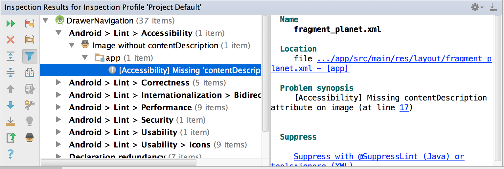

Android - Developer testing: code analysis
This step allows accessibility issues to be reported directly during the development phase and causes application build errors or various warnings. The developer must therefore correct them directly in order to be able to build his application and make it work, which automatically makes it more accessible before even putting it through manual tests or analysis tools. In addition, it avoids possible accessibility regressions.
Lint #
The developer can first use the Lint tool in Android Studio, on his application, to do a first pass on the accessibility problems encountered. 5 accessibility problems can be reported with Lint :
- ClickableViewAccessibility: If a view overloads
onTouchEventor oveloardsonTouchListener, but does not implementperformClick - ContentDescription : non-textual widgets with no contentDescription
- KeyboardInaccessibleWidget : widgets being declared as clickable but not focusable.
- LabelFor : an EditText must contain either a hint, either the reference of a label associated with labelFor
- GetContentDescriptionOverride : overriding getContentDescription can cause accessing accessibility services issues. If you need to modify the description, you should instead call the function: setContentDescription
Example of a Lint report in Android Studio:
Automated tests: Espresso #
Espresso is a framework for UI testing on Android. You can integrate the ATF framework (Accessibility Test Framework), which will add a layer of tests concerning accessibility.
No explicit test needs to be written. Once ATF is integrated into the Expresso tests, accessibility checks are added automatically. ATF works with ViewAction, meaning that it will automatically perform the accessibility check on ViewAction interactions set up in the Espresso tests. Additionally, to enable accessibility checks, you must call the AccessibilityChecks.enable() function in the test suite.
How integrate ATF :
@Before public static void enableAccessibilityChecks() { AccessibilityChecks.enable(); }companion object { @BeforeClass @JvmStatic fun enableAccessibilityChecks() { AccessibilityChecks.enable() } }
So, when in the test suite a ViewAction.click () is performed on a button that does not match the size required for an interactive element, the test will appear as an error until the accessibility issue be resolved.
Perform automated accessibility tests on the complete screen #
Accessibility testing automation according to ViewAction can be limited. That's why, validations from root view can be enabled to test all views, without the 'ViewActions' restrictions. To do this, replace AccessibilityChecks.enable() by AccessibilityChecks.enable().setRunChecksFromRootView(true)
Log accessibility errors rather than causing test failures #
Accessibility errors can be logged so that they appear in the Android Studio logcat, rather than causing Espresso tests fail, although this is not recommended. This should only be used temporarily. To do this, add the following function:
AccessibilityChecks.enable().setThrowExceptionForErrors(false)
Create a whitelist #
Rather than log all accessibility errors in the logcat, it is possible to create a whitelist to log only the ones you want, while keeping the others in error. To do this, we must add the following function :
AccessibilityChecks.enable().setRunChecksFromRootView(true).setSuppressingResultMatcher(matchesView(anyOf(withId(R.id.buttonPlus))))
In this example, the view with the id buttonPlus will not be indicated in error if there is an accessibility problem, but will be displayed in the logcat.
These images are licensed under a Creative Commons Share Alike 2.0 license. Photo credit: openexhibits